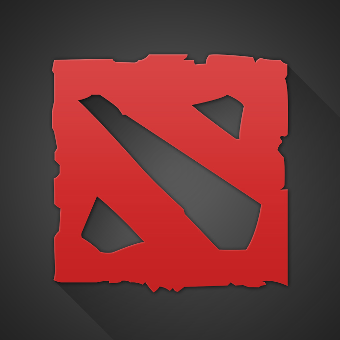

Особливості нашого бусту
Швидко
Дешево
Надійно
Буст звання
Для більшості гравців звання є ключовим результатом ігрового процесу. Але як його підняти, якщо часто доводиться зустрічатися в пабі з не найприємнішими особистостями, які не прагнуть перемогти, а стати геніальним гравцем не виходить в середовищі поганих тіммейтов і таких же противників? Єдиним логічним рішенням стає замовити послугу «буст ".
Що це?
Буст - це швидке підняття рівня профілю професіоналами, вже мають максимальний ранг і готовими допомогти в його отриманні всім бажаючим. Використовуючи його, користувач може повністю забути про лоускілльних тіммейтів і швидко перейти на високий рівень, де буде зустрічатися з більш адекватними і умілими гравцями , які прагнуть до нових перспектив і розуміючими, як повинна виглядати гра в команді, спрямована на перемогу. Саме тому буст аккаунта використовується величезною кількістю перспективних гравців, які не мають можливості самостійно підніматися з-за поганої команди або нестачі часу, адже для підйому з низів доводиться витрачати місяці, а іноді навіть роки.
Як відбувається прокачування аккаунта ?
Буст - це проста процедура, яка не вимагає від гравця якихось особливих дій. Вам достатньо вказати звання, яке ви хочете отримати в результаті, оплатити послугу і надати нам дані від свого аккаунта, після чого почекати, поки наші фахівці зроблять все необхідне. На буст ціни у нас найдоступніші, тому ви можете підвищити свій аккаунт до будь-якого бажаного рангу.
Послуги
